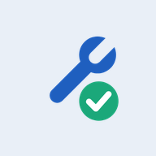
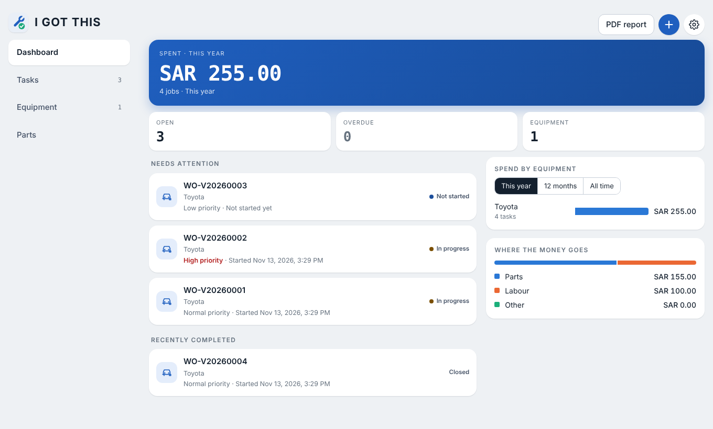
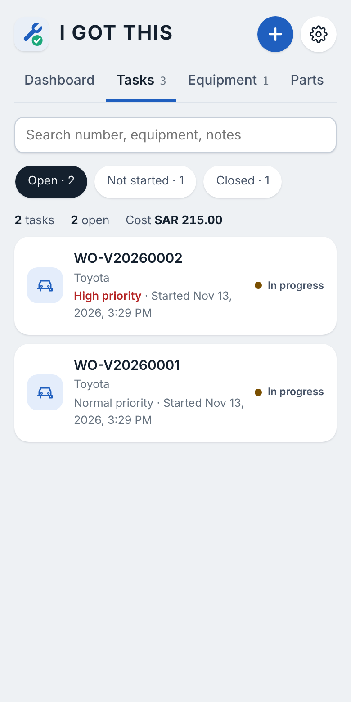
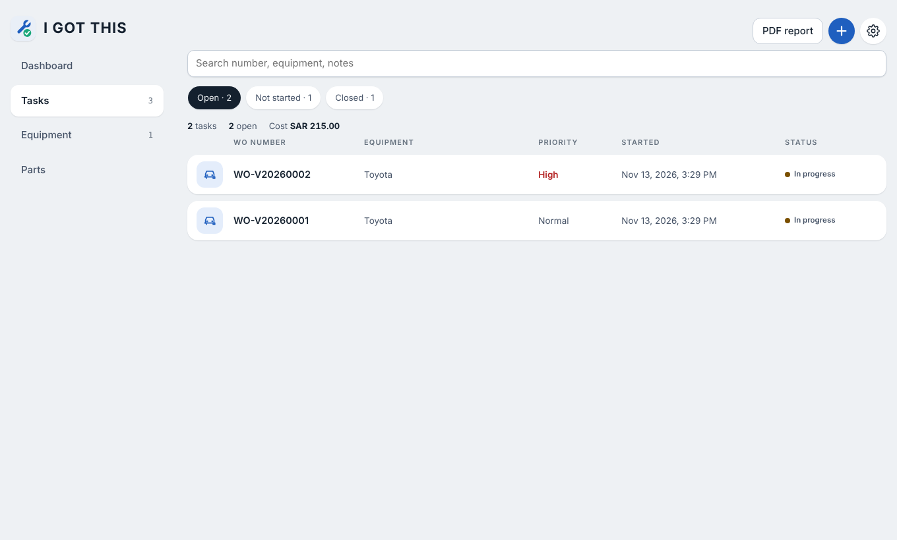

I Got ThisHome and car maintenance
Give each car, appliance and room its own record. Open a numbered task, tick the checklist, log the parts and the cost, and keep the PDF. It works the same on a phone and on a desktop.
Free. No account needed. Your records stay on your own device.


What it does
Everything you would write on the back of an envelope, in one place you can search, total up and print.
Each task gets the next number for its kind of equipment, with the plate or serial number beside it. Find any job in seconds.
Start a checklist on any task. It cannot be closed until every step is ticked, and a closed task stays closed.
Log what you used and what it cost. See the total per task, per piece of equipment and per year.
Note which garage or technician did the work, save the location and attach photos of the place.
Make a report for one task or for a whole year, and keep a copy attached to the task.
Set an urgent repair to Further action and the phone apps remind you three days later if it is still waiting.
On the desktop
On a wide screen the app gives you a side menu and a task table with the WO number, equipment, priority and start time on one line. On a phone it folds back into a single column.

How a task works
Get the app
Opens right here, and you can add it to your home screen or install it from the browser. It updates itself.
Open the web appDownload the APK from the latest release and open it on your phone. Android will ask you to allow installs from your browser or files app the first time.
Download the APKThe easiest way is the web app: open it in Safari and choose Add to Home Screen. A native build is also on the releases page, but it is unsigned and has to be installed with a tool such as Sideloadly or AltStore.
See the releases